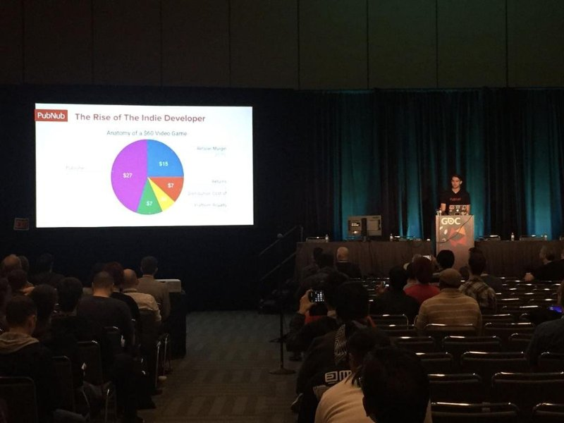

Daniel Garcia
Hey there! My name’s Daniel, and I’m currently majoring in Business Administration with a focus on marketing at the University of California, Riverside. Choosing this path has been a huge part of my journey, especially since I’ve always been curious about the ways businesses connect with people and how brands can make an impact on everyday lives. Growing up, I was fascinated by how certain brands seemed to understand me on a personal level—it’s like they knew exactly what I wanted or how I felt. Over time, that curiosity grew into a desire to learn the “how” and “why” behind effective marketing strategies.
One of the biggest things that inspired me to pursue marketing was seeing how much of an influence technology has on consumer behavior. I think we’re at this incredible point where the boundaries of traditional and digital marketing are blending. The ways brands connect with audiences today are so different from just a decade ago. As we see AI tools or data analytics become major players in marketing, I’m eager to be part of a field that’s shaping the future of communication and consumer engagement. My goal is to eventually become a marketing manager at a big tech company like Google, where I’d have the resources and opportunities to impact global marketing strategies.
Something else that shaped my journey is my involvement in AVID, which I was part of for eight years. AVID, for those who aren’t familiar, is a program focused on helping students develop the skills they need to be successful in college and beyond. Through AVID, I learned to prioritize my time, set goals, and tackle challenges with persistence. The experience taught me how to work in a collaborative setting and improved my communication skills significantly. I think that foundation has been invaluable in my studies and work life, where both teamwork and effective communication are essential.
Currently, I work as a college tutor for the Fontana Unified School District. This role has been both challenging and rewarding. I’m able to connect with high school students and help guide them through complex subjects, supporting their growth and learning. Working as a tutor has taught me to be patient and has also given me the chance to strengthen my interpersonal skills. I’ve seen firsthand how much students rely on their tutors, not only to understand academic content but also for advice and guidance in general. Being someone they can count on is something I take seriously, and it gives me a sense of purpose and responsibility.
In addition to academics and work, I make time for self-reflection through journaling. I jot down my thoughts, feelings, and experiences each week. It’s a routine that helps me keep track of my personal and academic goals, and it provides insight into areas I can improve. Whether it’s reflecting on a particular challenge I faced or noting a new accomplishment, journaling has become a grounding habit. It’s a small ritual, but it reminds me to stay focused on the bigger picture and helps me understand myself a bit better each day.
Looking forward, I’m excited about where my major will take me and the possibilities within the marketing field. I think we’re in a rapidly evolving world where staying adaptable and learning continuously are crucial. I feel lucky to be in a field that’s dynamic, creative, and interconnected with so many industries. Being able to make a meaningful impact and possibly work for a leading company someday, while helping shape the future of marketing, is a prospect that motivates me every day. For now, I’m just trying to soak in as much knowledge and experience as I can, stay proactive in my goals, and look forward to the journey ahead.
Outside of school and work, I’ve got a handful of hobbies that keep me energized and inspired. Life can get pretty intense between my classes in business administration and my job as a college tutor, so having ways to unwind and recharge is crucial for me.
One of my biggest passions is art. At first, I started it as a way to get my thoughts in order, especially during stressful times, but it’s turned into so much more. Every week, I set aside some time to reflect on how things are going, what I’m feeling, and what I’ve learned. It sounds simple, but it has a huge impact on my mindset and keeps me grounded. I find that jotting down my goals, challenges, and thoughts really helps me understand myself and stay on track with where I want to be. Plus, it’s cool to look back at old entries and see how much I’ve grown, which gives me extra motivation.
Besides art, I’m a huge sports fan, especially when it comes to basketball and soccer. I love following the NBA and European soccer leagues, but I also enjoy just getting on the court or field myself. There’s something about being in a game that just puts me in the zone and helps me forget about everything else. Playing basketball or soccer with friends is not only a great way to stay active, but it’s also a lot of fun. You get to compete, strategize, and push yourself physically. It’s one of those things that, even when I’m exhausted after a game, I feel more energized mentally.
Another hobby of mine is gaming. I know it sounds pretty typical, but for me, it’s more than just a way to pass the time. Gaming has this unique way of letting you jump into different worlds, experience new stories, and connect with people from all over the world. I usually play with friends, and it’s a great way to stay connected even when everyone’s busy with their own lives. I especially enjoy games that have a strategic element to them because they let me challenge myself and think in different ways. Plus, some of the stories and graphics are seriously impressive—it feels like you’re part of a movie or book. It’s the perfect escape after a long day, especially when I just need to relax and have some fun.
Last but not least, I like to stay active by going for hikes or exploring local trails. I’ve found that being out in nature, away from screens and constant noise, is really refreshing. It gives me time to clear my head and just enjoy the moment. There’s something about being in wide-open spaces that brings a sense of peace and balance.
Each of these hobbies gives me something different. Art helps me reflect, sports keep me active, gaming lets me connect with others, and hiking brings calm. Balancing all these is what keeps me motivated and ready for whatever comes next.
Looking to the future, I have a pretty clear vision of where I’d like to be and what I want to achieve. I’m currently majoring in Business Administration with a concentration in marketing at the University of California, Riverside, and my long-term goal is to become a marketing manager, ideally at a major tech company like Google. I’ve always been fascinated by the ways brands communicate and connect with people, and I’d love to be part of an innovative team that shapes the future of marketing.
One of my main ambitions is to bring creativity and data-driven strategies together in my work. I’m passionate about exploring the unique ways brands can engage with people, especially as technology continues to evolve. In the future, I see myself leading projects that leverage new tools, like AI and machine learning, to understand consumer behavior and tailor marketing strategies to fit people’s needs more closely. Technology is making it possible to connect with audiences in ways we’ve never seen before, and being at the forefront of that is something that really excites me.
Alongside my career goals, I also hope to continue my work with young people, perhaps by expanding on the tutoring I currently do. Right now, I work as a college tutor for the Fontana Unified School District, and it’s been an incredibly rewarding experience. Working with students and helping them understand complex subjects has taught me so much about patience, communication, and empathy. In the future, I’d like to keep contributing in this area, maybe through volunteer programs or mentorship opportunities for students interested in business and marketing. I believe that giving back and helping the next generation find their paths is a responsibility and a privilege.
I also plan to keep investing time in personal growth and reflection. Journaling has been a big part of my life, and I can’t imagine giving it up. As I move forward, I want to make sure I stay grounded and focused on my goals. I think it’s easy to get lost in the hustle of a fast-paced career, but taking time to reflect each week is something I’ll keep doing. Whether it’s through journaling or other methods of self-reflection, I want to make sure that I’m constantly learning and adapting, both personally and professionally.
Of course, life isn’t all about work, and I have some personal dreams, too. One of them is to travel more and explore different cultures. I’m particularly interested in places where I can learn about new approaches to marketing and business. Experiencing diverse perspectives would not only enrich my personal life but also inspire my work. Meeting people from various backgrounds and understanding their stories would give me fresh ideas for connecting with audiences.
In the end, I envision a future where I’m engaged in meaningful work that combines creativity, technology, and empathy. I hope to lead marketing projects that make a real impact, mentor young professionals, and continually grow along the way. It’s a journey that’s only just beginning, but I’m excited for what lies ahead and ready to embrace the challenges that come my way.
Experience
Teaching Assistant
• Ran sessions to help students learn how to code
• Reviewed and graded student coding projects
• Created educational content to help promote student education
• TA'd for over 400 students each academic quarter
Education
UC Riverside
University of California Riverside
University of California Riverside
Portfolio
